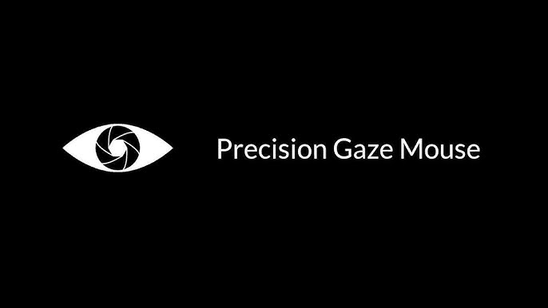
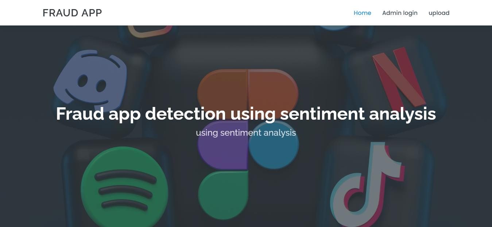

My Projects

It's a web application built using HTML and CSS.
View Project

It focused on developing advanced eye-tracking technology to enable more accurate and intuitive control of digital interfaces..
View Project

This project uses sentiment analysis techniques to identify fraudulent activity in online communications, such as reviews, or customer interactions.
View ProjectTemperature conversion
This is a user-friendly web application that allows users to convert temperatures between Celsius, Fahrenheit, and Kelvin. Built using HTML, CSS, and JavaScript.
View Project